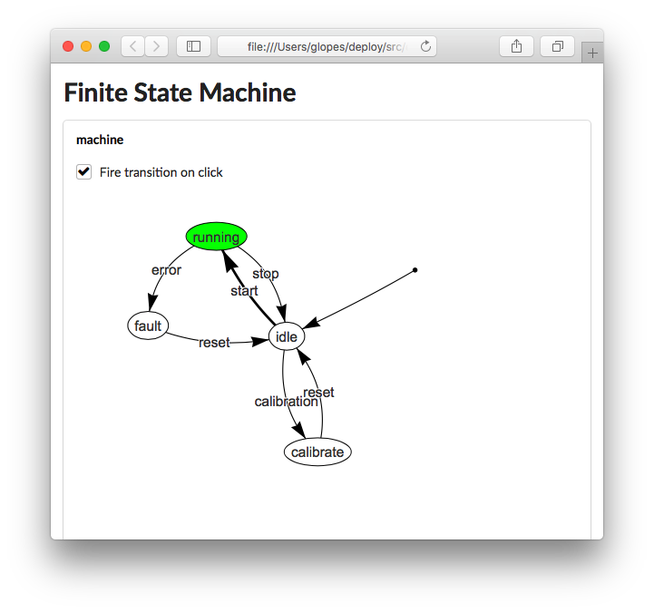
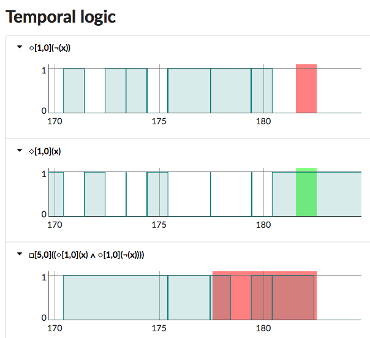

Robotics in a day: ROS, ROL, AWS RoboMaker
Tutorial IROS 2019
Introduction
The Robotics Language (RoL) is an open extensible domain-specific (or model-based) language for robotics. RoL is an abstraction on top of ROS to efficiently and quickly develop ROS applications using a mathematics-centred language. RoL generates ROS c++ nodes, HTML interfaces, or any other elements. The base RoL language has a structure similar to standard high-level programming languages.
# A simple topic echo node
node(
name:'example echo',
definitions: block(
# the input signal
echo_in ∈ Signals(Strings, rosTopic:'/echo/in', onNew: echo_out = echo_in ),
# the echo signal
echo_out ∈ Signals(Strings, rosTopic:'/echo/out')
)
)
In addition RoL has the ability to integrate abstraction languages that simplify the way code is written. This results in a “vertical” abstraction approach for development (using many languages), as opposed to the classical “horizontal” abstraction approach used in most projects (abstraction by creating libraries using the same language).
# A finite state machine
node(
name:'example state machine',
definitions: block(
# an abstraction language: code is defined within `<{ }>`
FiniteStateMachine<{
name:machine
initial:idle
(idle)-start->(running)-stop->(idle)
(running)-error->(fault)-reset->(idle)
(idle)-calibration->(calibrate)-reset->(idle)
}>,
# the start signal
start ∈ Signals(Empty, rosTopic:'/start', onNew: machine.fire('start')),
# the stop signal
stop ∈ Signals(Empty, rosTopic:'/stop', onNew: machine.fire('stop'))
)
)
ROL generates code to different versions of ROS
| Original ROL code |
|
| Generated ROS1 c++ code |
|
| Generated ROS2 c++ code |
|
Automatically generated graphical user interfaces in the browser allow for development and monitoring.
RoL contains high-level language element abstractions that are very useful for robotics, such as Interval Temporal Logic for signals.
node(
name:'temporal logic test example',
definitions: block(
# a signal
x ∈ Signals(Booleans, rosTopic:'/temporal_logic/x'),
when(□[1,0](x),
print('always in the last second')),
when(◇[4,1](x),
print('eventually from 4 seconds to 1 second ago')),
when(□[5,0](◇[1,0](x) ∧ ◇[1,0](¬x)),
print('oscillating faster then 1Hz for at least 5 seconds'))
)
)
Generated GUIs visualise the signals in time and the outcome of the logic.
In this tutorial we go over using the RoL language, its tools, abstraction languages, and creating new language elements and plugins.
Organizers
Dr. Gabriel A.D. Lopes is a robotics and control scientist at RRC Robotics, Netherlands. He received a “Licenciatura” degree in Aerospace Engineering at the Instituto Superior Tecnico, Universidade Tecnica de Lisboa, Portugal and MSc and PhD degrees in Electrical Engineering and Computer Science from the University of Michigan. In 2007, he was a visiting scholar at the Grasp lab, University of Pennsylvania, USA. From 2009 to 2016, Dr. Lopes was an Assistant Professor at the Delft Center for Systems and Control, Delft University of Technology, NL. His interests include robotics, dynamical systems, nonlinear control, machine learning, software architectures, and many other topics.
Dr. Carlos Hernández Corbato is a postdoctoral researcher at the Department of Cognitive Robotics, Delft University of Technology, in the Robot Dynamics Group. He graduated with honors in Industrial Engineering (2006) and received his M.Sc. Ph.D in Automation and Robotics from the Universidad Politecnica de Madrid in 2013. Carlos is currently the coordinator of the ROSIN European project granted in the H2020 program. He has participated in other national and European projects in the topics of cognitive robotics and factories of the future. His research interests include cognitive architectures, autonomy and model-based engineering. He also (jointly) lead Team Delft, that won the Amazon Robotics Challenge 2016.
Msc. Dimitrios Chronopoulos is an Embedded Systems Engineer (Master of Science, TUDelft). Software Team Leader in RRC Robotics currently in charge of the Autonomous Navigation, Mapping and Localization System and the High-Level Behaviour of the LEA robot (powered by an early version of the Robotics Language). Has additional experience in Embedded Software, Networking and Electrical Engineering.
Ir. Floris Gaisser is a senior engineer and co-founder of RRC Robotics. He is currently a leader in the WEPods project: self-driving public buses. He has a Bsc. in Industrial Design Engineering, and a Msc. in Mechanical Engineering in the field of Biomechanical Design with specialisations in Biorobotics and Intelligent Mechanical Systems, all at the Delft University of Technology, NL. His interests include robotics, self-driving cars, machine learning.
Outline
Part I, The philosophy of the Robotics Language and the compiler (30min)
Background
ROS and ROSin
The language of robotics
Compiler architecture
Part II, Using the Robotics Language (1 hour)
Types, variables, functions
Abstraction languages
Event-based vs synchronous execution
Special constructs
Extending the language
Part III, Tools (3 hour)
Temporal Logic (30 min)
Finite State Machines (30 min)
Deep learning (1 hour)
External lecturer TBA, 1 hour
Part IV, Developing abstraction languages (1.5 hour)
A Parser for a finite state machine abstraction language
Transformer and code generation
HTML interactive GUI
Case studies
Lea is an assistive walker. It supports people with challenges in mobility. It is a full autonomous robot: it can navigate in user's homes or hospitals. Lea’s supervisory engine is running ROL. Four different abstraction languages were used in the development of Lea.
WePods is a self-driving mini-bus. The upcoming decision-tree engine of WePods is designed using ROL.
Resources
Robotics language on github: https://github.com/robotcaresystems/RoboticsLanguage
Ros-Industrial consortium: https://rosindustrial.org
ROSIN EU project: http://rosin-project.eu
IEEE IRC 2019: http://irc.asia.edu.tw/2019/
Robot care systems: http://www.robotcaresystems.com